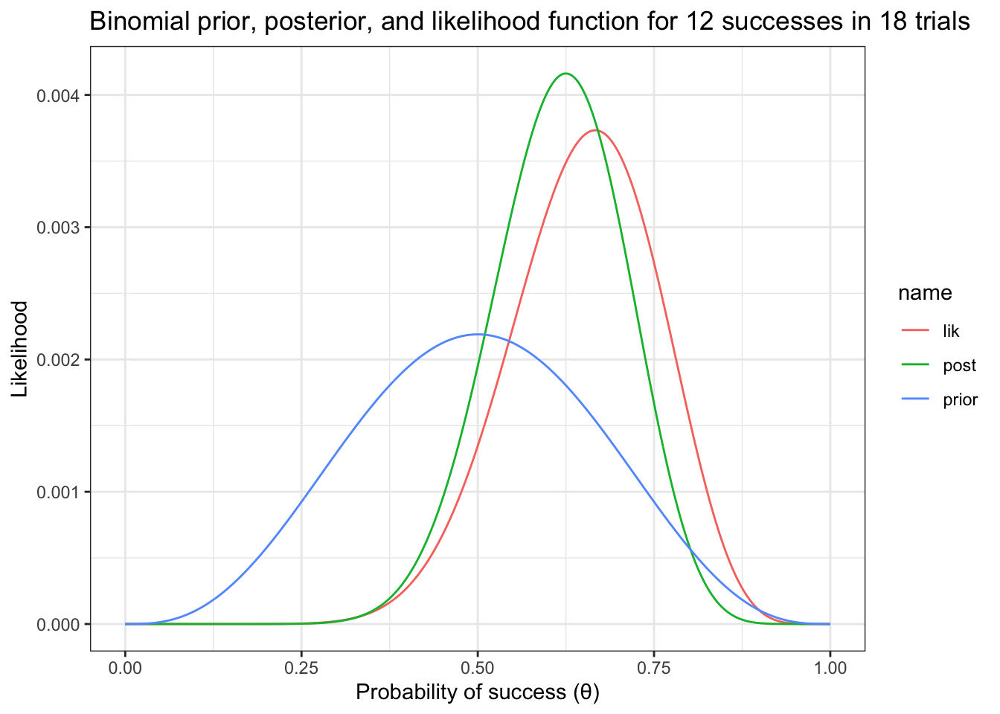

library(tidyverse)
library(ggformula)
library(rstan)
library(posterior)
library(bayesplot)
library(triangle)
options(mc.cores = parallel::detectCores())
rstan_options(auto_write = TRUE)
rstan_options(threads_per_chain = 1)
theme_set(theme_bw())
set.rseed(666)Bayesian modeling with R and Stan
References
Setup environment
Bayes’ theorem
\[ P(A, B) = P(A) \cdot P(B \mid A) \]
\[ P(B \mid A) = \frac{P(A,B)}{P(A)} = \frac{P(B,A)}{P(A)} = \frac{P(B) \cdot P(A \mid B)}{P(A)} \]
Bayesian data analysis
\[ p(\theta \mid y) = \frac{p(\theta) \cdot p(y \mid \theta)}{p(y)} = \frac{p(\theta) \cdot p(y \mid \theta)}{\int_{\Theta} p(\theta) \cdot p(y \mid \theta)} \]
\[ p(\theta \mid y) \propto p(\theta) \cdot p(y \mid \theta) \] \[ \text{posterior} \propto \text{prior} \cdot \text{likelihood} \]
Frequentist vs Bayesian
Binomial example
Grid approximation
In \(n\) (18) trials, we observe \(k\) (12) successes. The likelihood function is expressed as follows:
\[ p(k, n \mid \theta) \propto \theta^{k} \times (1 - \theta)^{n - k} \]
\[ p(K = 12, N = 18 \mid \theta) \propto \theta^{12} \times (1 - \theta)^{6} \]
gf_function(
fun = function(p) dbinom(12, size = 18, prob = p),
xlim = c(0, 1)) |>
gf_labs(
x = "Probability of success (θ)",
y = "Likelihood",
title = "Binomial likelihood function for 12 successes in 18 trials"
)Assuming a uniform prior:
\[ p(\theta) = 1 \]
The posterior is proportional to the likelihood function:
\[ p(\theta \mid K, N) \propto p(\theta) \cdot p(K, N \mid \theta) = p(K, N \mid \theta) \]
p <- seq(0, 1, length.out = 1000)
prior <- dbeta(p, 1, 1)
lik <- dbinom(12, size = 18, prob = p)
post <- prior * lik
prior <- prior / sum(prior) # norm prior
lik <- lik / sum(lik) # norm likelihood
post <- post / sum(post) # norm posterior
tibble(p, prior, lik, post) %>% pivot_longer(-p) %>% gf_line(value ~ p, color = ~ name) %>% gf_labs(
x = "Probability of success (θ)",
y = "Likelihood",
title = "Binomial prior, posterior, and likelihood function for 12 successes in 18 trials"
)p <- seq(0, 1, length.out = 1000)
prior <- dbeta(p, 4, 4)
lik <- dbinom(12, size = 18, prob = p)
post <- prior * lik
prior <- prior / sum(prior) # norm prior
lik <- lik / sum(lik) # norm likelihood
post <- post / sum(post) # norm posterior
tibble(p, prior, lik, post) %>% pivot_longer(-p) %>% gf_line(value ~ p, color = ~ name) %>% gf_labs(
x = "Probability of success (θ)",
y = "Likelihood",
title = "Binomial prior, posterior, and likelihood function for 12 successes in 18 trials"
)
p <- seq(0, 1, length.out = 1000)
prior <- dtriangle(p)
lik <- dbinom(12, size = 18, prob = p)
post <- prior * lik
prior <- prior / sum(prior) # norm prior
lik <- lik / sum(lik) # norm likelihood
post <- post / sum(post) # norm posterior
tibble(p, prior, lik, post) %>% pivot_longer(-p) %>% gf_line(value ~ p, color = ~ name) %>% gf_labs(
x = "Probability of success (θ)",
y = "Likelihood",
title = "Binomial prior, posterior, and likelihood function for 12 successes in 18 trials"
)p <- seq(0, 1, length.out = 1000)
prior <- dbeta(p, 1, 1)
lik <- dbinom(2, size = 3, prob = p)
post <- prior * lik
prior <- prior / sum(prior) # norm prior
lik <- lik / sum(lik) # norm likelihood
post <- post / sum(post) # norm posterior
tibble(p, prior, lik, post) %>% pivot_longer(-p) %>% gf_line(value ~ p, color = ~ name) %>% gf_labs(
x = "Probability of success (θ)",
y = "Likelihood",
title = "Binomial prior, posterior, and likelihood function for 2 successes in 3 trials"
)p <- seq(0, 1, length.out = 1000)
prior <- dbeta(p, 4, 4)
lik <- dbinom(2, size = 3, prob = p)
post <- prior * lik
prior <- prior / sum(prior) # norm prior
lik <- lik / sum(lik) # norm likelihood
post <- post / sum(post) # norm posterior
tibble(p, prior, lik, post) %>% pivot_longer(-p) %>% gf_line(value ~ p, color = ~ name) %>% gf_labs(
x = "Probability of success (θ)",
y = "Likelihood",
title = "Binomial prior, posterior, and likelihood function for 2 successes in 3 trials"
)p <- seq(0, 1, length.out = 1000)
prior <- dtriangle(p)
lik <- dbinom(2, size = 3, prob = p)
post <- prior * lik
prior <- prior / sum(prior) # norm prior
lik <- lik / sum(lik) # norm likelihood
post <- post / sum(post) # norm posterior
tibble(p, prior, lik, post) %>% pivot_longer(-p) %>% gf_line(value ~ p, color = ~ name) %>% gf_labs(
x = "Probability of success (θ)",
y = "Likelihood",
title = "Binomial prior, posterior, and likelihood function for 2 successes in 3 trials"
)Stan
N <- 18
y <- c(rep(1, 12), rep(0, 6))
stan_data <- list(N = N, y = y)
stan_data$N
[1] 18
$y
[1] 1 1 1 1 1 1 1 1 1 1 1 1 0 0 0 0 0 0data {
int<lower=0> N;
array[N] int<lower=0, upper=1> y;
}
parameters {
real<lower=0, upper=1> theta;
}
model {
theta ~ uniform(0, 1); // prior
y ~ bernoulli(theta); // likelihood
}bin_unif_fit <- sampling(bin_unif_mod, data = stan_data)summary(as_draws(bin_unif_fit))mcmc_combo(bin_unif_fit)data {
int<lower=0> N;
array[N] int<lower=0, upper=1> y;
}
parameters {
real<lower=0, upper=1> theta;
}
model {
theta ~ beta(4, 4); // prior
y ~ bernoulli(theta); // likelihood
}bin_beta_fit <- sampling(bin_beta_mod, data = stan_data)summary(as_draws(bin_beta_fit))mcmc_combo(bin_beta_fit)Print environment
sessioninfo::session_info()─ Session info ───────────────────────────────────────────────────────────────
setting value
version R version 4.4.3 (2025-02-28)
os macOS Sequoia 15.3.2
system aarch64, darwin20
ui X11
language (EN)
collate en_US.UTF-8
ctype en_US.UTF-8
tz America/New_York
date 2025-03-20
pandoc 3.2 @ /Applications/RStudio.app/Contents/Resources/app/quarto/bin/tools/aarch64/ (via rmarkdown)
quarto 1.6.42 @ /usr/local/bin/quarto
─ Packages ───────────────────────────────────────────────────────────────────
package * version date (UTC) lib source
abind 1.4-8 2024-09-12 [1] CRAN (R 4.4.1)
assertthat 0.2.1 2019-03-21 [1] CRAN (R 4.4.0)
backports 1.5.0 2024-05-23 [1] CRAN (R 4.4.0)
bayesplot * 1.11.1 2024-02-15 [1] CRAN (R 4.4.0)
callr 3.7.6 2024-03-25 [1] CRAN (R 4.4.0)
checkmate 2.3.2 2024-07-29 [1] CRAN (R 4.4.0)
cli 3.6.4 2025-02-13 [1] CRAN (R 4.4.1)
codetools 0.2-20 2024-03-31 [2] CRAN (R 4.4.3)
colorspace 2.1-1 2024-07-26 [1] CRAN (R 4.4.0)
curl 6.2.1 2025-02-19 [1] CRAN (R 4.4.1)
digest 0.6.37 2024-08-19 [1] CRAN (R 4.4.1)
distributional 0.5.0 2024-09-17 [1] CRAN (R 4.4.1)
dplyr * 1.1.4 2023-11-17 [1] CRAN (R 4.4.0)
evaluate 1.0.3 2025-01-10 [1] CRAN (R 4.4.1)
farver 2.1.2 2024-05-13 [1] CRAN (R 4.4.0)
fastmap 1.2.0 2024-05-15 [1] CRAN (R 4.4.0)
forcats * 1.0.0 2023-01-29 [1] CRAN (R 4.4.0)
generics 0.1.3 2022-07-05 [1] CRAN (R 4.4.0)
ggformula * 0.12.0 2023-11-09 [1] CRAN (R 4.4.0)
ggplot2 * 3.5.1 2024-04-23 [1] CRAN (R 4.4.0)
ggridges * 0.5.6 2024-01-23 [1] CRAN (R 4.4.0)
glue 1.8.0 2024-09-30 [1] CRAN (R 4.4.1)
gridExtra 2.3 2017-09-09 [1] CRAN (R 4.4.0)
gtable 0.3.6 2024-10-25 [1] CRAN (R 4.4.1)
haven 2.5.4 2023-11-30 [1] CRAN (R 4.4.0)
hms 1.1.3 2023-03-21 [1] CRAN (R 4.4.0)
htmltools 0.5.8.1 2024-04-04 [1] CRAN (R 4.4.0)
htmlwidgets 1.6.4 2023-12-06 [1] CRAN (R 4.4.0)
inline 0.3.21 2025-01-09 [1] CRAN (R 4.4.1)
jsonlite 1.9.1 2025-03-03 [1] CRAN (R 4.4.1)
knitr 1.50 2025-03-16 [1] CRAN (R 4.4.1)
labeling 0.4.3 2023-08-29 [1] CRAN (R 4.4.0)
labelled 2.14.0 2025-01-08 [1] CRAN (R 4.4.1)
lifecycle 1.0.4 2023-11-07 [1] CRAN (R 4.4.0)
loo 2.8.0 2024-07-03 [1] CRAN (R 4.4.0)
lubridate * 1.9.4 2024-12-08 [1] CRAN (R 4.4.1)
magrittr 2.0.3 2022-03-30 [1] CRAN (R 4.4.0)
MASS 7.3-64 2025-01-04 [2] CRAN (R 4.4.3)
matrixStats 1.5.0 2025-01-07 [1] CRAN (R 4.4.1)
mosaicCore 0.9.4.0 2023-11-05 [1] CRAN (R 4.4.0)
munsell 0.5.1 2024-04-01 [1] CRAN (R 4.4.0)
pillar 1.10.1 2025-01-07 [1] CRAN (R 4.4.1)
pkgbuild 1.4.6 2025-01-16 [1] CRAN (R 4.4.1)
pkgconfig 2.0.3 2019-09-22 [1] CRAN (R 4.4.0)
plyr 1.8.9 2023-10-02 [1] CRAN (R 4.4.0)
posterior * 1.6.1 2025-02-27 [1] CRAN (R 4.4.1)
processx 3.8.6 2025-02-21 [1] CRAN (R 4.4.1)
ps 1.9.0 2025-02-18 [1] CRAN (R 4.4.1)
purrr * 1.0.4 2025-02-05 [1] CRAN (R 4.4.1)
QuickJSR 1.6.0 2025-02-26 [1] CRAN (R 4.4.1)
R6 2.6.1 2025-02-15 [1] CRAN (R 4.4.1)
Rcpp 1.0.14 2025-01-12 [1] CRAN (R 4.4.1)
RcppParallel 5.1.10 2025-01-24 [1] CRAN (R 4.4.1)
readr * 2.1.5 2024-01-10 [1] CRAN (R 4.4.0)
reshape2 1.4.4 2020-04-09 [1] CRAN (R 4.4.0)
rlang 1.1.5 2025-01-17 [1] CRAN (R 4.4.1)
rmarkdown 2.29 2024-11-04 [1] CRAN (R 4.4.1)
rstan * 2.35.0.9000 2024-06-06 [1] https://stan-dev.r-universe.dev (R 4.4.0)
rstudioapi 0.17.1 2024-10-22 [1] CRAN (R 4.4.1)
scales * 1.3.0 2023-11-28 [1] CRAN (R 4.4.0)
sessioninfo 1.2.3 2025-02-05 [1] CRAN (R 4.4.1)
StanHeaders * 2.35.0.9000 2024-06-06 [1] https://stan-dev.r-universe.dev (R 4.4.0)
stringi 1.8.4 2024-05-06 [1] CRAN (R 4.4.0)
stringr * 1.5.1 2023-11-14 [1] CRAN (R 4.4.0)
tensorA 0.36.2.1 2023-12-13 [1] CRAN (R 4.4.0)
tibble * 3.2.1 2023-03-20 [1] CRAN (R 4.4.0)
tidyr * 1.3.1 2024-01-24 [1] CRAN (R 4.4.0)
tidyselect 1.2.1 2024-03-11 [1] CRAN (R 4.4.0)
tidyverse * 2.0.0 2023-02-22 [1] CRAN (R 4.4.0)
timechange 0.3.0 2024-01-18 [1] CRAN (R 4.4.0)
triangle * 1.0 2022-12-13 [1] CRAN (R 4.4.1)
tzdb 0.5.0 2025-03-15 [1] CRAN (R 4.4.1)
V8 6.0.2 2025-03-14 [1] CRAN (R 4.4.1)
vctrs 0.6.5 2023-12-01 [1] CRAN (R 4.4.0)
withr 3.0.2 2024-10-28 [1] CRAN (R 4.4.1)
xfun 0.51 2025-02-19 [1] CRAN (R 4.4.1)
yaml 2.3.10 2024-07-26 [1] CRAN (R 4.4.0)
[1] /Users/marcoe02/.Rlib
[2] /Library/Frameworks/R.framework/Versions/4.4-arm64/Resources/library
* ── Packages attached to the search path.
──────────────────────────────────────────────────────────────────────────────